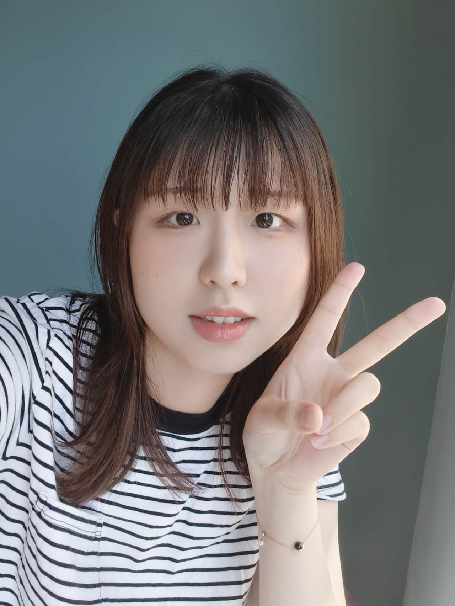

|
Yijing Zhang
I am currently a senior CS undergrad at University of Wisconsin - Madison. I am graduating in May, 2024 with B.S degree, Honor in the Major.
My research interest is in machine learning. Specifically, I am interested in data-efficient models and robus language models.
Email /
LinkedIn /
Github /
Google Scholar
|

|
|
|
University of Wisconsin - Madison
B.S with Honor in the Major
Computer Science Major
Sep. 2021 - May. 2024
|
|
Project 1: Methods for Domain-specific Fine-tuning for Generative Models
|
|
This is an independent research study for my senior honor thesis (73 pages) supervised under Prof. Frederic Sala . It focus on investigating the retrainability of synthetic datasets generated by fine-tuned generative models for domain-specific downstream classification tasks and the fine-tuning efficiency for generating higher-quality synthetic datasets.
Presented my work at Senior Honors Thesis Symposium 2024.
Related Topics: NLP, Foundation models, Generative models, Fine-tuning, Data Efficiency
|
|
Project 2: Audio-Guided Visual Animation
|
|
Supervised by Prof. Pedro Morgado , we worked on highly syncrhonized audio-to-video generation, focusing on generatation of animation with audio guidance.
Resulting paper is in submission to ECCV 2024.
Related Topic: Computer vision, Generative models, Audio-to-Video.
|
|
Supervised by Prof. Frederic Sala , we worked on self-aligning models without further training. We proposed AlignEZ that uses (1) self-generated preference data; (2) representation editing to provide nearly cost-free alignment.
Resulting paper is in submission to NeurIPS 2024. Now taking a lead role for the next phase of this project.
Related Topic: NLP, Alignment.
|
|
|
CS400 Peer Mentor
Jan. 2022 - May. 2024
|
|
Summer Research Intern
May. 2022 - Aug. 2022
|
|
|
Video Publisher
3500+ Followers, About 1 millions views, Top 0.8% Anime section
Some of the important works includes:
Japanese-to-Chinese anime-related translation
AI singing voice convertion artwork
|
|
{kind=link}